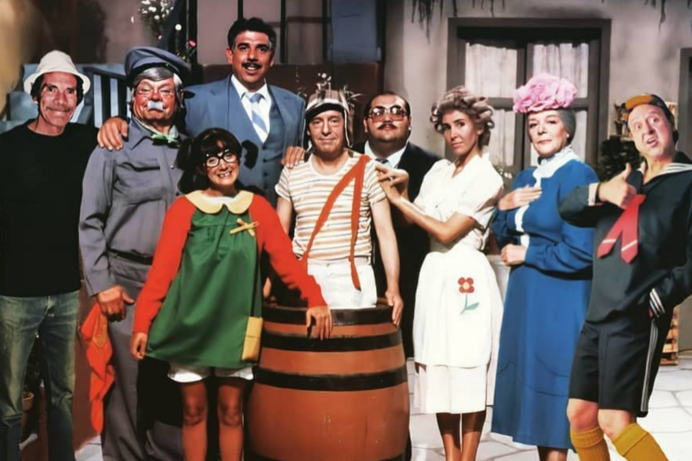
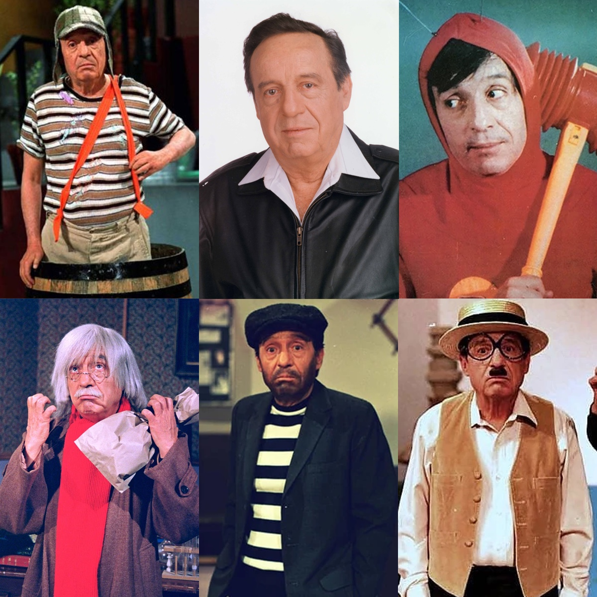
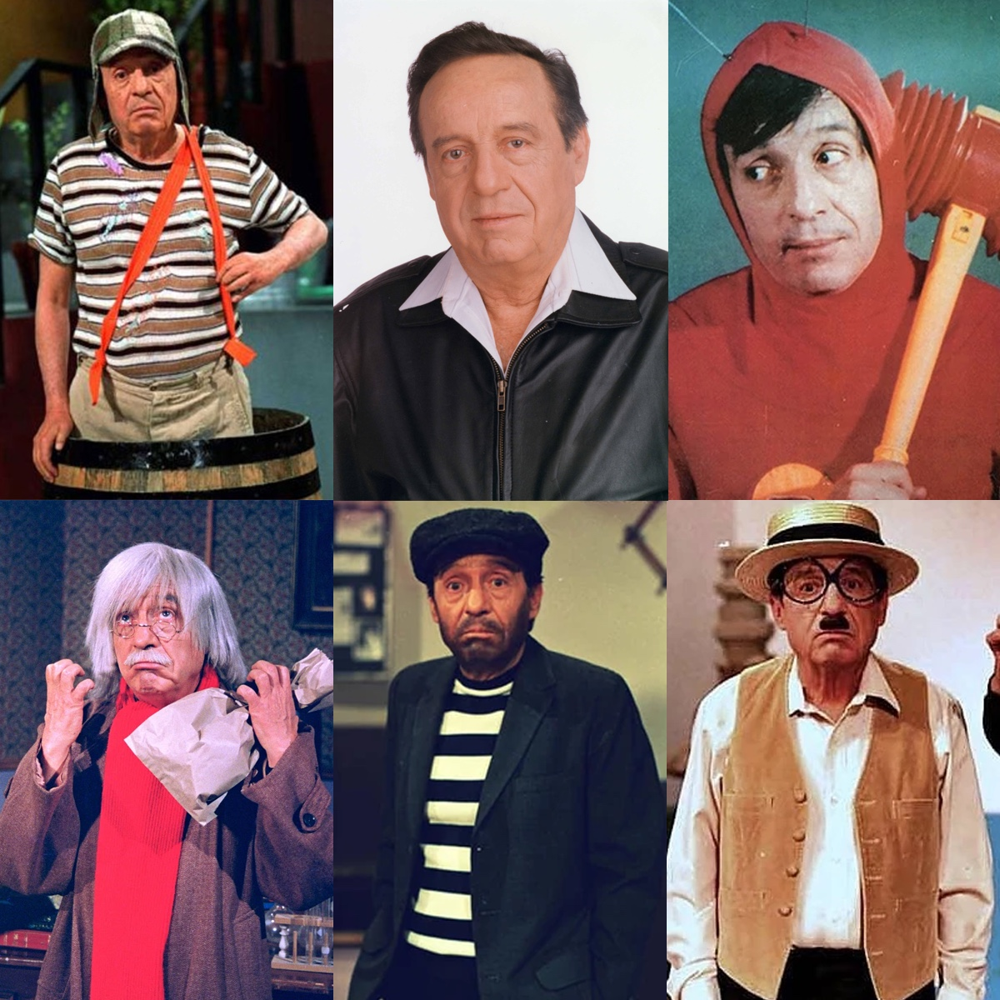

Roberto Mario Gómez y Bolaños - O Inigualável
Roberto Bolaños
Nascido em 21 de fevereiro de 1929, Roberto Mario Gómez y Bolaños foi um artista multifacetado, exercendo desde a década de 1950 diversas funções no mundo artístico. Roberto era ator, diretor, escritor, roteirista, desenhista, cantor, comediante, publicitário, entre outros ramos. Ele é considerado um dos maiores nomes no meio artístico. Roberto, na sua adolescência se destacava como um bom pugilista, na Universidade Nacional Autônoma do México, estudou engenharia mecânica. Porém, foi nas artes onde se encontrou de fato. Quando tinha 22 anos, começou a trabalhar numa agência publicitária, escrevendo tirinhas humorísticas, fazendo jingles, cartazes, e acabou se destacando e sendo contratado para ser roteirista de um programa de rádio, que viraria televisivo devido ao grande sucesso. Quando um ator faltou, Roberto substitui ele em cena e desse momento em diante, não parou mais.
Devido a sua qualidade ao escrever e sua baixa estatura, ganhou o apelido de "Chespirito", uma adaptação de "pequeno Shakespeare". Com o passar dos anos e o ganho exponencial de reconhecimento no meio, Chespirito ganhou um horário em TV aberta para exibir um conteúdo com total autonomia. Foi nesses horários que os personagens "Chaves" e "Chapolin" ganharam notoriedade. E de tão famosos ficaram os personagens, que ambos ganharam um horário especial para exibição na TV.
Chaves
Provavelmente o maior personagem de Roberto Bolaños foi o Chaves. Era um menino órfão de 8 anos que se escondia em um barril de madeira e que se divertia com os moradores de uma vila. O barril não era sua moradia (como muitos acreditam), até porque o próprio Chaves disse que era impossível alguém viver em um barril. Chaves era um menino pobre, que vivia com fome, e também era muito sincero e ingênuo. A cada episódio, apesar das dificuldades, Chaves sempre tentava conseguir algo para comer, além de brincar e aprontar várias "peças" com os outros personagens da vila.
Chapolin
Chapolin ou Chapolin Colorado era um super-herói gafanhoto que não colocava respeito e sempre era ridicularizado por seus inimigos. Chapolin sempre aparecia quando alguém em perigo gritava "E agora, quem poderá me defender?", e então o super-herói aparecia e normalmente de maneira bastante atrapalhada. O nome Chapolin tem no espanhol "chapulin", que significa gafanhoto, e segundo a história, seu pai era entomólogo e então decidiu dar o nome de um inseto à seu filho.
A apresentação clássica em espanhol anunciava Chapolin com a seguinte frase: "mais rápido que uma tartaruga, mais forte que um rato, mais nobre que um alface, e seu escudo é um coração. É o Chapolin Colorado!" Apesar dessas humilhantes características, Chapolin tinha alguns superpoderes como: teletransportar-se, respirar no espaço sem precisar de roupa especial, viajar no tempo, saltar grandes distâncias (de ai o gafanhoto), além de usar alguns instrumentos que lhe possibilitava outras façanhas.

Mais Imagens
 

Linha do Tempo
Nascido em 21 de fevereiro de 1929, Roberto Mario Gómez y Bolaños é natural da Cidade do México. Durante sua adolescência, Roberto adorava futebol e boxe.
Em 1950, abandonou o estudo de engenharia mecânica para se dedicar ao ramo artístico. E em 1952, Roberto Bolaños conseguiu uma vaga de redator em uma agência de publicidade e começou a escrever profissionalmente pela primeira vez. Com o seu trabalho sendo exposto, seu reconhecimento foi crescendo exponencial.
Ainda na década de 50, foi contratado para ser roteirista de um programa de rádio, que viraria televisivo devido ao grande sucesso. Quando um ator faltou, Roberto substitui ele em cena e desse momento em diante, não parou mais.
Em 1970, em um programa de duração maior, surge o personagem Chapolin Colorado, um dos mais icônicos de Roberto. E em 1972, Chaves, provavelmente seu maior personagem, aparece. Ambos ganharam um horário independente na TV em 1973, devido sua grande aceitação pelo público.
Chapolin e Chaves chegaram ao fim nos anos de 1979 e 1980, respectivamente. E mesmo após o fim das gravações, essas séries ainda são exibidas em muitos países até os dias de hoje.
Bolaños seguiu fazendo filmes, teatros e escrevendo livros, até que em 28 de Novembro de 2014, ele faleceu em Cancún, aos 85 anos.